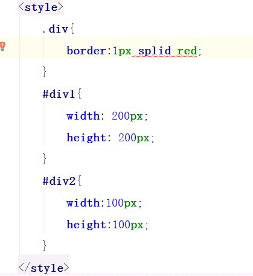
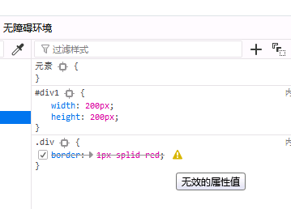

粗心大意!浪费了30分钟时间,必须记录一下!
报错图片

琢磨了半天,没想出是哪里错了,很无奈!!!!!!!!!
度娘:ctrl+shift+alt+H,设置成NONE就可以了
试了一下,果然好使,不再报错,这样设置只是把css代码的错误忽视了,掩耳盗铃,并没有什么卵用
该行报错css代码的效果并没有显示出来,,,,,,,,,
最终解决:
网页打开css修饰的html文件,在他人帮助下,F12->查看器

无效的属性值: border:1px splid red;才发现拼错了 应该是: border:1px solid red;因为拼错单词耽误半个小时,很不划算,
############################################################
教训:发现错误,异常在网页直接查看错误源头,很权威还比百度….靠谱多了.能直接查看错误为什么还要听别人胡扯!!!############################################################